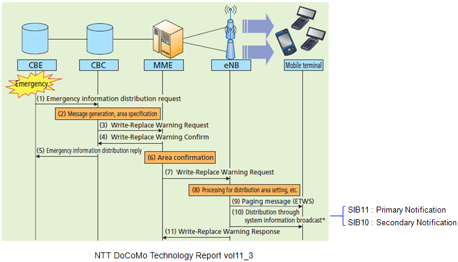

|
LTE Quick Reference Go Back To Index Home : www.sharetechnote.com |
|
|
ETWS (Earthquake and Tsunami Warning System)
ETWS is a kind of public warning system (PWS) to notify all the UEs in a specific area of emergency situation like Earthquake or Tsunami. The concept is very similar to Cell Broadcasting in WCDMA and GSM network.
In WCDMA, we used a special channel called CTCH (Common Traffic Channel) for this purpose, but in LTE we use a couple of SIB messages to periodically broadcast the warning information to all the UEs in a certain area simultaneouly. (I personally prefer this method than using CTCH). The SIBs that carry the information about ETWS is SIB10 and SIB11.
When an emergency situation happens, network broadcast the details of the emergency via SIB 10/SIB11 and inform UE to let decode SIB10/11 by sending special Paging message. When UE recieves this Paging message, UE has to decode SIB10/11 and display the warning information on the screen.
In LTE, there are three main components getting involved in sending ETWS as follows. i) Paging : ETWS Notification. ii) SIB 10 : Secondary Notification iii) SIB 11 : Primary Notification Overall message flow for LTE ETWS from NTT DoCoMo Technology Report is as follows.

Following is Paging, SIB10, SIB11 showing the field (IEs) related to ETWS. (For the details of ETWS, refer to 3GPP TS23.828 and TS22.268 and TS 36.523 section14 ETWS)
RRC_LTE:PCCH-Message PCCH-Message ::= SEQUENCE +-message ::= CHOICE [c1] +-c1 ::= CHOICE [paging] +-paging ::= SEQUENCE [0110] +-pagingRecordList ::= SEQUENCE OF OPTIONAL:Omit +-systemInfoModification ::= ENUMERATED [true] OPTIONAL:Exist +-etws-Indication ::= ENUMERATED [true] OPTIONAL:Exist +-nonCriticalExtension ::= SEQUENCE OPTIONAL:Omit
RRC_LTE:BCCH-DL-SCH-Message BCCH-DL-SCH-Message ::= SEQUENCE +-message ::= CHOICE [c1] +-c1 ::= CHOICE [systemInformation] +-systemInformation ::= SEQUENCE +-criticalExtensions ::= CHOICE [systemInformation-r8] +-systemInformation-r8 ::= SEQUENCE [0] +-sib-TypeAndInfo ::= SEQUENCE OF SIZE(1..maxSIB[32]) [1] | +- ::= CHOICE [sib10] | +-sib10 ::= SEQUENCE [1] | +-messageIdentifier ::= BIT STRING SIZE(16) [0000000000000000] | +-serialNumber ::= BIT STRING SIZE(16) [0000000000000000] | +-warningType ::= OCTET STRING SIZE(2) [0000] | +-warningSecurityInfo ::= OCTET STRING SIZE(50) [0000000000000000000000000000 0000000000000000000000000000 0000000000000000000000000000 0000000000000000] OPTIONAL:Exist +-nonCriticalExtension ::= SEQUENCE OPTIONAL:Omit
RRC_LTE:BCCH-DL-SCH-Message BCCH-DL-SCH-Message ::= SEQUENCE +-message ::= CHOICE [c1] +-c1 ::= CHOICE [systemInformation] +-systemInformation ::= SEQUENCE +-criticalExtensions ::= CHOICE [systemInformation-r8] +-systemInformation-r8 ::= SEQUENCE [0] +-sib-TypeAndInfo ::= SEQUENCE OF SIZE(1..maxSIB[32]) [1] | +- ::= CHOICE [sib11] | +-sib11 ::= SEQUENCE [1] | +-messageIdentifier ::= BIT STRING SIZE(16) [0000000000000000] | +-serialNumber ::= BIT STRING SIZE(16) [0000000000000000] | +-warningMessageSegmentType ::= ENUMERATED [notLastSegment] | +-warningMessageSegmentNumber ::= INTEGER (0..63) [0] | +-warningMessageSegment ::= OCTET STRING SIZE(ALIGNED) | +-dataCodingScheme ::= OCTET STRING SIZE(1) [00] OPTIONAL:Exist +-nonCriticalExtension ::= SEQUENCE OPTIONAL:Omit
You can find the defailed description of each of these information elements in the following specification. (Refer to 36.331 for framework specification).
|